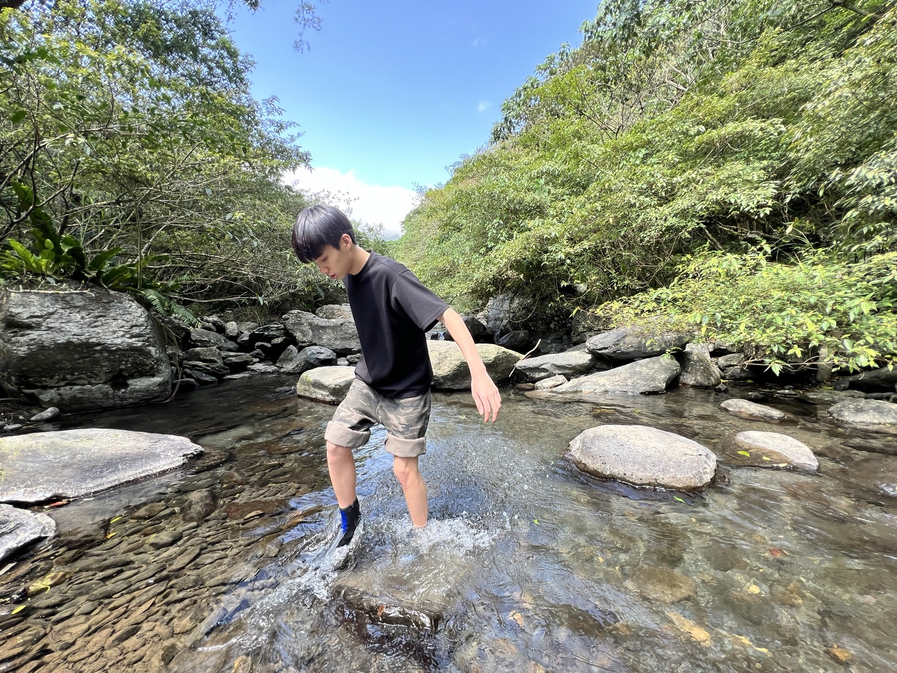
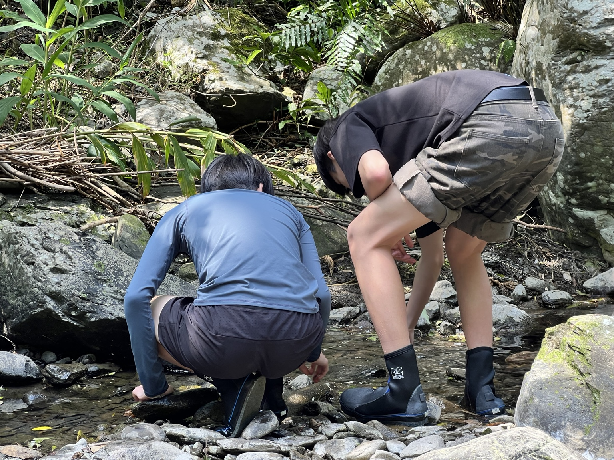
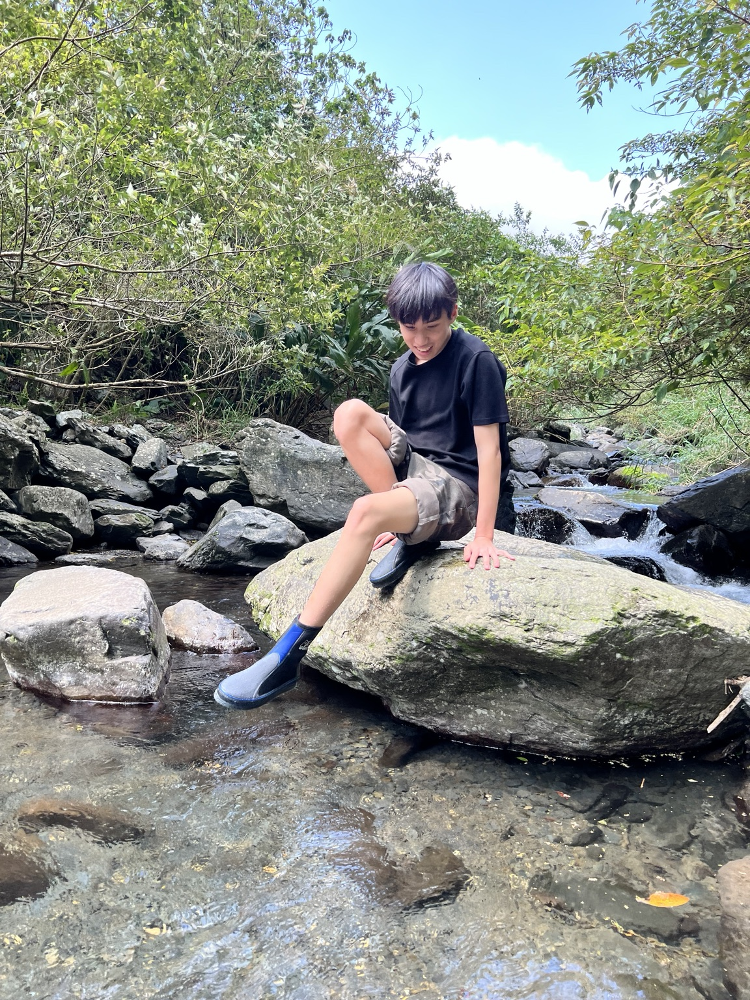
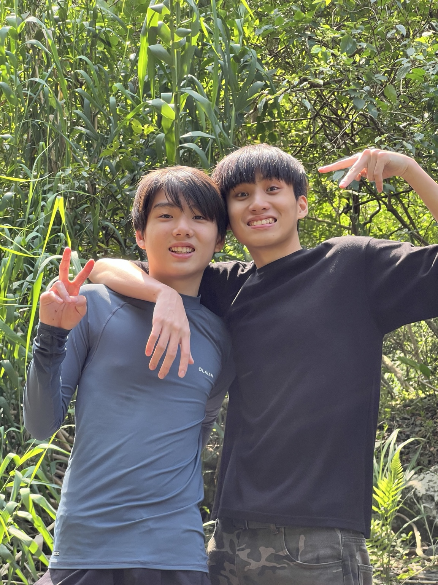
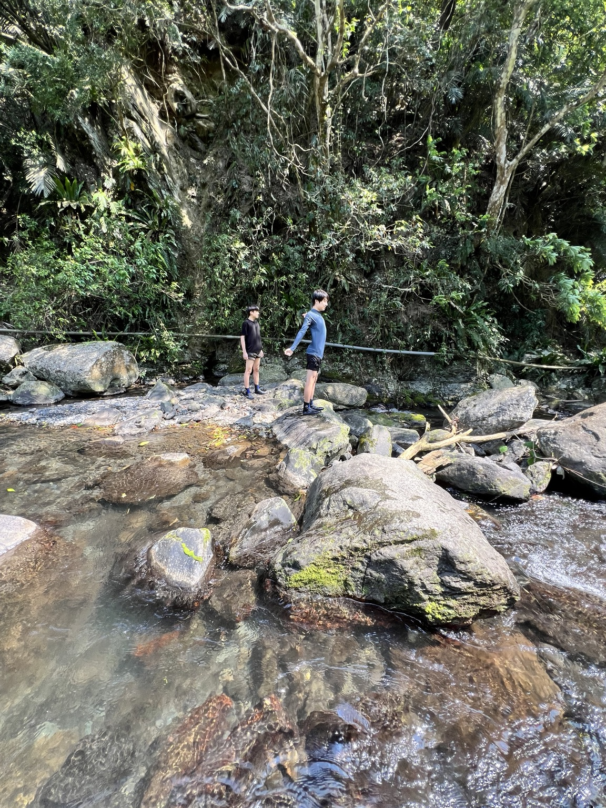
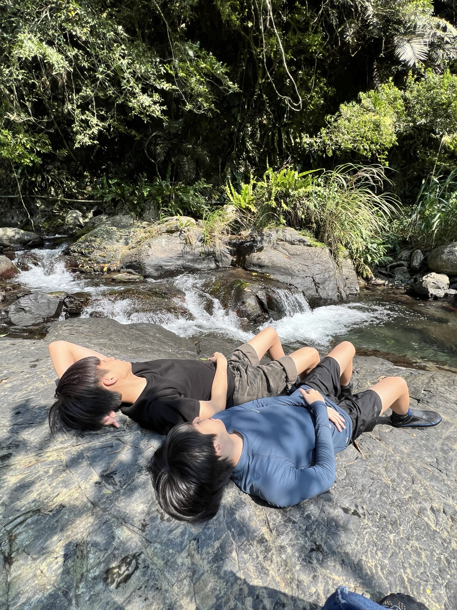
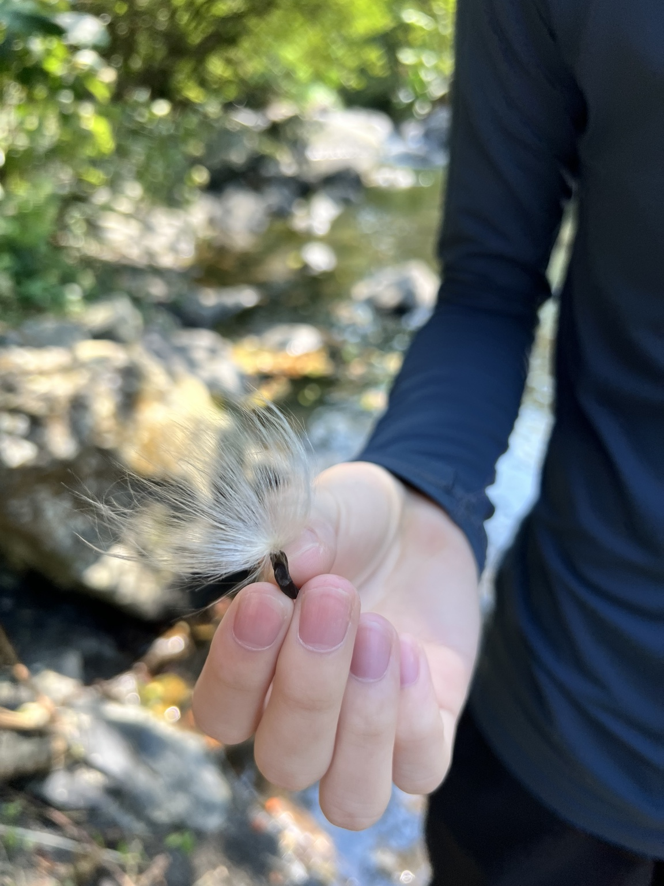
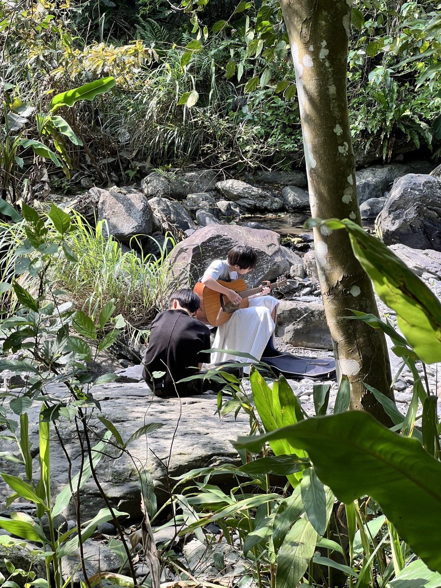

溪流中的實際移動與體驗
在溪水中行走與踩踏石面，直接感受水流、深淺與地面變化，這類活動同時需要身體協調、平衡與環境判斷。
本次活動由家人陪同前往山區溪邊，透過步行、涉水、停留、觀察與互動，進行一場結合自然接觸、生活體驗與戶外活動的實地紀錄。 相較於只透過文字或影像理解自然環境，實際進入場域、感受水流、石面、植被與空間變化，能更具體地累積環境感受與生活經驗。
這次到溪邊的戶外活動，不只是單純出遊，而是一次真實場域中的自然接觸與生活學習。孩子們在溪流與岩石之間移動、停留、觀察，過程中同時運用身體平衡、空間判斷、環境注意力與即時互動能力。從照片中也能看見，活動不只是看風景，而是實際參與其中，包含探索水流與石頭、觀察周邊植物、在環境中放鬆，以及與家人共同留下當天的生活紀錄。

在溪水中行走與踩踏石面，直接感受水流、深淺與地面變化，這類活動同時需要身體協調、平衡與環境判斷。

蹲下來近看水面、石頭與溪邊細節，讓自然環境不只是背景，而是真正進入觀察與探索的對象。

坐在溪中石面上停留，讓活動不只有移動，也包含放慢節奏、感受水聲、氣溫與周邊空間的片刻。

活動過程中留下合照，不只是紀念，也呈現這次戶外經驗具有陪伴、互動與共同參與的生活意義。

站在岩石與溪流之間，能更直接理解地形高低、環境尺度與自然場域的立體空間感。

溪邊活動不只是探索，也包含在安全環境下停下來休息、放鬆，感受自然空間帶來的安定與舒緩。

活動中也觀察到小型自然物件，從整體環境延伸到細部事物，讓戶外活動增加更多具體而細緻的記憶點。

在溪邊彈奏吉他，讓活動從探索自然延伸到音樂陪伴與場域感受，也讓這次紀錄多了更完整的情境層次。
這次溪邊活動的價值，不只在於留下照片，而在於把一次真實發生的自然接觸經驗整理成可保存、可回顧的內容。 從涉水、觀察、互動、休息，到在自然環境中彈奏音樂，整體過程呈現出的是一種完整的生活經驗：既有身體活動，也有感官體驗；既有空間觀察，也有家人陪伴。對學習網站而言，這類頁面能補足純文字報告之外的另一個面向，讓外部閱讀者更容易理解孩子的生活參與、自然接觸與真實活動歷程。